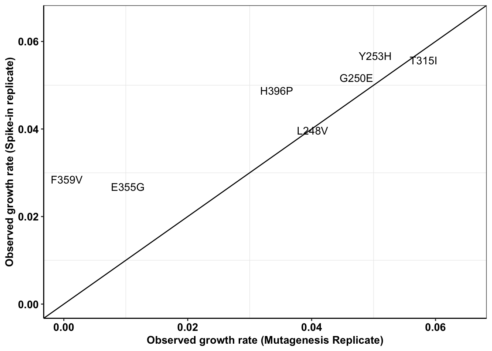

4_7_20 Update
Haider Inam
4/7/2020
Last updated: 2020-04-20
Checks: 7 0
Knit directory: duplex_sequencing_screen/
This reproducible R Markdown analysis was created with workflowr (version 1.6.0). The Checks tab describes the reproducibility checks that were applied when the results were created. The Past versions tab lists the development history.
Great! Since the R Markdown file has been committed to the Git repository, you know the exact version of the code that produced these results.
Great job! The global environment was empty. Objects defined in the global environment can affect the analysis in your R Markdown file in unknown ways. For reproduciblity it’s best to always run the code in an empty environment.
The command set.seed(20200402) was run prior to running the code in the R Markdown file. Setting a seed ensures that any results that rely on randomness, e.g. subsampling or permutations, are reproducible.
Great job! Recording the operating system, R version, and package versions is critical for reproducibility.
Nice! There were no cached chunks for this analysis, so you can be confident that you successfully produced the results during this run.
Great job! Using relative paths to the files within your workflowr project makes it easier to run your code on other machines.
Great! You are using Git for version control. Tracking code development and connecting the code version to the results is critical for reproducibility. The version displayed above was the version of the Git repository at the time these results were generated.
Note that you need to be careful to ensure that all relevant files for the analysis have been committed to Git prior to generating the results (you can use wflow_publish or wflow_git_commit). workflowr only checks the R Markdown file, but you know if there are other scripts or data files that it depends on. Below is the status of the Git repository when the results were generated:
Ignored files:
Ignored: .Rhistory
Ignored: .Rproj.user/
Untracked files:
Untracked: analysis/grant_fig.pdf
Untracked: analysis/grant_fig_v2.pdf
Untracked: data/Combined_data_frame_IC_Mutprob_abundance.csv
Untracked: data/IC50HeatMap.csv
Untracked: data/Twinstrand/
Untracked: data/gfpenrichmentdata.csv
Untracked: data/heatmap_concat_data.csv
Untracked: grant_fig.pdf
Untracked: grant_fig_v2.pdf
Untracked: output/archive/
Untracked: output/ic50data_all_conc.csv
Untracked: shinyapp/
Unstaged changes:
Deleted: data/README.md
Modified: output/twinstrand_maf_merge.csv
Modified: output/twinstrand_simple_melt_merge.csv
Note that any generated files, e.g. HTML, png, CSS, etc., are not included in this status report because it is ok for generated content to have uncommitted changes.
These are the previous versions of the R Markdown and HTML files. If you’ve configured a remote Git repository (see ?wflow_git_remote), click on the hyperlinks in the table below to view them.
| File | Version | Author | Date | Message |
|---|---|---|---|---|
| Rmd | 2bba93e | haiderinam | 2020-04-20 | wflow_publish(“analysis/*.Rmd“) |
| html | 4ca8cf7 | haiderinam | 2020-04-07 | Build site. |
| Rmd | 12f0a8a | haiderinam | 2020-04-07 | wflow_publish(“analysis/4_7_20_update.Rmd”) |
| html | 11647b8 | haiderinam | 2020-04-07 | Build site. |
| Rmd | ec622ed | haiderinam | 2020-04-07 | wflow_publish(“analysis/4_7_20_update.Rmd”) |
Tasks:
Comparison E255k GFP versus duplex sequencing
gfpdata$ttotal_sequenced=c(0,3,6)
gfpdata$xtotal_sequenced=c(129,3323,37023)
# gfpdata_simple=gfpdata%>%dplyr::select(ttotal_4,xtotal_4_e255k)
# e255k=twinstrand_maf_merge%>%filter(mutant=="E255K",experiment=="M3")
gfpplotlog=ggplot(gfpdata)+
geom_line(aes(x=t_out_4,y=log10(x_out_4_e255k)),color="#1cce16",size=1.5)+geom_ribbon(aes(x = t_out_4_conintub,ymax=log10(x_out_4_e255k_ciub),ymin=log10(x_out_4_e255k_cilb)),fill="#1cce16",alpha=.3)+
geom_line(aes(x=t_out_3,y=log10(x_out_3_e255k)),color="#206A36",size=1.5)+geom_ribbon(aes(x = t_out_3_conintub,ymax=log10(x_out_3_e255k_ciub),ymin=log10(x_out_3_e255k_cilb)),fill="#206A36",alpha=.3)+
geom_point(aes(x=ttotal_4,y=log10(xtotal_4_e255k)),size=3)+
geom_point(aes(x=ttotal_3,y=log10(xtotal_3_e255k)),size=3)+
geom_point(aes(x=ttotal_sequenced,y=log10(xtotal_sequenced)),size=3,shape="square",color="blue")+
theme_bw()+theme(plot.title = element_text(hjust=.5),text = element_text(size=24),axis.title = element_text(face="bold",size="19"),axis.text=element_text(face="bold",size="19"))+
xlim(0,7)+
scale_y_continuous(labels=parse(text = c("10^3","10^5")),limits = c(2,6.5),breaks = c(3,5))+
# scale_y_continuous(labels = function(x) format(x, scientific = TRUE), limits = c(1e2,5e6),trans='log10',labels=parse(text = c("10^3","10^5"))+
# scale_y_continuous(labels = parse(text = c("10^3","10^5")), limits = c(1e2,5e6),trans='log10')+
ylab('Resistant Population')+
xlab('Time (Days)')
gfpplotlogWarning: Removed 13 rows containing missing values (geom_path).
Warning: Removed 13 rows containing missing values (geom_path).Warning: Removed 40 rows containing missing values (geom_point).
Warning: Removed 40 rows containing missing values (geom_point).
Dilutions down to 1:15000 expected versus recovered
twinstrand_maf_merge=twinstrand_maf_merge%>%
mutate(Spike_in_freq=as.numeric(Spike_in_freq))%>%
mutate(Spike_in_freq=case_when(experiment=="Enu_4"~2000,
experiment==experiment~Spike_in_freq))%>%
mutate(actualDepth=Depth*3)%>% #To account for 2 mouse 1 human reads
mutate(expectedAltDepth=case_when(time_point=="D0"&Spike_in_freq==1000~Depth/1000,
time_point=="D0"&Spike_in_freq==5000~Depth/5000,
time_point=="D0"&Spike_in_freq==2000~Depth/2000,
time_point==time_point~NaN))
a=twinstrand_maf_merge%>%filter(time_point=="D0",experiment%in%c("M3","M6")&tki_resistant_mutation=="True"|experiment%in%"Enu_4",!mutant=="NA",!mutant=="D276G",!mutant=="V280syn")%>%
mutate(expectedAltDepth=case_when(experiment=="Enu_4"&mutant=="F311L"~expectedAltDepth,
experiment=="Enu_4"&mutant=="T315I"~expectedAltDepth*55,
experiment=="Enu_4"&mutant=="F317L"~expectedAltDepth*6,
experiment=="Enu_4"&mutant=="E355G"~expectedAltDepth*3,
experiment=="Enu_4"&mutant=="F359V"~expectedAltDepth*13,
experiment=="Enu_4"&mutant=="F359C"~expectedAltDepth*5,
experiment=="Enu_4"&mutant=="H396P"~expectedAltDepth*17,
experiment=="Enu_4"&mutant=="A397P"~expectedAltDepth*12,
experiment=="Enu_4"&mutant=="Y253H"~expectedAltDepth*63,
experiment=="Enu_4"&mutant=="Q252H"~expectedAltDepth*5,
experiment=="Enu_4"&mutant=="G250E"~expectedAltDepth*11,
experiment=="Enu_4"&mutant=="L248V"~expectedAltDepth*6,
experiment=="Enu_4"&mutant=="H214R"~expectedAltDepth*4,
experiment=="Enu_4"&mutant=="K285N"~expectedAltDepth*5,
experiment=="Enu_4"&mutant=="L324R"~expectedAltDepth*7,
mutant==mutant~expectedAltDepth))
ggplot(a%>%filter(AltDepth>1),aes(x=AltDepth/60000,y=expectedAltDepth/60000))+geom_point()+scale_y_continuous(trans="log10",limits=c(.00001,.05),name = "Predicted frequency")+scale_x_continuous(trans="log10",limits=c(.00001,.05),name="Measured frequency")+geom_abline()+cleanup+theme(legend.position = "none")
| Version | Author | Date |
|---|---|---|
| 4ca8cf7 | haiderinam | 2020-04-07 |
a=a%>%filter(AltDepth>1)
cor(a$AltDepth,a$expectedAltDepth)^2[1] 0.9939285Replicate 1 vs Replicate 2 measured in pool side by side
#Plotting SP 1000 and 5000
a=twinstrand_simple_melt_merge%>%
filter(!experiment%in%c("Enu_4","Enu_3"),duration%in%"d3d6",conc=="0.8")%>%
mutate(netgr_obs=case_when(experiment=="M5"~netgr_obs+.015,
experiment%in%c("M6","M3","M5","M4","M7")~netgr_obs))
plotly=ggplot(a,aes(x=netgr_pred,y=netgr_obs,label=mutant,color=factor(experiment)))+geom_text()+geom_abline()+cleanup
ggplotly(plotly)a=a%>%filter(experiment%in%c("M3","M5"),!mutant%in%"D276G")
spikeins_cast=dcast(a,formula = mutant~experiment,value.var = "netgr_obs")
ggplot(spikeins_cast,aes(x=M3,y=M5,label=mutant))+
geom_text()+
cleanup+
geom_abline()+
scale_x_continuous(limits = c(0,.065),name="Observed growth rate (1:5,000 replicate)")+
scale_y_continuous(limits = c(0,.065),name="Observed growth rate (1:15,000 replicate)")
| Version | Author | Date |
|---|---|---|
| 4ca8cf7 | haiderinam | 2020-04-07 |
cor(spikeins_cast$M3,spikeins_cast$M5)^2[1] 0.78928#Therefore, R^2= 0.79Replicate 1 vs all other replicates
#Plotting SP 1000 and 5000
a=twinstrand_simple_melt_merge%>%
filter(!experiment%in%c("Enu_4","Enu_3"),duration%in%"d3d6",conc=="0.8")%>%
mutate(netgr_obs=case_when(experiment=="M5"~netgr_obs+.015,
experiment%in%c("M6","M3","M5","M4","M7")~netgr_obs))
# plotly=ggplot(a,aes(x=netgr_pred,y=netgr_obs,label=mutant,color=factor(experiment)))+geom_text()+geom_abline()+cleanup
# ggplotly(plotly)
a=a%>%filter(experiment%in%c("M3","M4"),!mutant%in%"D276G")
spikeins_cast=dcast(a,formula = mutant~experiment,value.var = "netgr_obs")
ggplot(spikeins_cast,aes(x=M3,y=M4,label=mutant))+
geom_text()+
cleanup+
geom_abline()+
scale_x_continuous(limits = c(0,.065),name="Observed growth rate (1:5,000 replicate)")+
scale_y_continuous(limits = c(0,.065),name="Observed growth rate (1:15,000 replicate)")
cor(spikeins_cast$M3,spikeins_cast$M4)^2[1] 0.851572#Therefore, R^2= 0.79
#M3,M4: .85
#M4,M5: 0.83ENU Replicate 1 vs Replicate 2
# twinstrand_maf_merge=read.csv("../output/twinstrand_maf_merge.csv",header = T,stringsAsFactors = F)
twinstrand_maf_merge=read.csv("output/twinstrand_maf_merge.csv",header = T,stringsAsFactors = F)
################Remaking Twinstrand Simple Melt Merge################
twinstrand_simple=twinstrand_maf_merge%>%filter(!is.na(mutant),!is.na(experiment))
twinstrand_simple=twinstrand_simple%>%dplyr::select("mutant","experiment","Spike_in_freq","time_point","totalmutant")
###Inferring Enu_4 D0 total mutants to be the same as Enu_3 D0 totals
twinstrand_simple_enu4d0=twinstrand_simple%>%filter(experiment=="Enu_4",time_point=="D0")%>%mutate(experiment="Enu_3")
twinstrand_simple=rbind(twinstrand_simple,twinstrand_simple_enu4d0)
twinstrand_simple_cast=dcast(twinstrand_simple,mutant+experiment+Spike_in_freq~time_point,value.var="totalmutant")
twinstrand_simple_cast$d0d3=log(twinstrand_simple_cast$D3/twinstrand_simple_cast$D0)/72
twinstrand_simple_cast$d3d6=log(twinstrand_simple_cast$D6/twinstrand_simple_cast$D3)/72
twinstrand_simple_cast$d0d6=log(twinstrand_simple_cast$D6/twinstrand_simple_cast$D0)/144
# twinstrand_simple_cast2=twinstrand_simple_cast%>%group_by(mutant)%>%mutate(case_when(D0=experiment=="Enu_3"~D0[experiment=="Enu_4"]))
#Check if ln(final/initial)/time is the correct formula. Also notice how I'm using days not hours
twinstrand_simple_melt=melt(twinstrand_simple_cast[,-c(4:6)],id.vars=c("mutant","experiment","Spike_in_freq"),variable.name = "duration",value.name = "netgr_obs") #!!!!!!!!!!!value name should be drug effect. And drug effect should be drug_effect_obs i think. NO. I think this should be drug_effect_obs. Fixed 4/2/20
twinstrand_simple_melt$drug_effect_obs=net_gr_wodrug-twinstrand_simple_melt$netgr_obs
# twinstrand_simple_melt_merge=merge(twinstrand_simple_melt,ic50data_formerge,"mutant")
twinstrand_simple_melt_merge=merge(twinstrand_simple_melt,ic50data_long%>%filter(conc==conc_for_predictions),all.x = T)
# a=twinstrand_simple_melt%>%filter(experiment%in%"Enu_3")
# a=twinstrand_simple_cast%>%filter(experiment%in%"Enu_3")
# a=twinstrand_maf_merge%>%filter(experiment%in%"Enu_3",time_point=="D3")
#########################
####Plotting replicate 1 vs replicate 2 in two ways.
#1. Use only replicates in which you have sufficient coverage for mutants on D6
#2. Instead of using D3 and D6 counts. Use D0 and D3 counts. Since you didn't have counts for ENU for D3, assume that counts for Enu_3 at D0 would have looked the same as ENU_4 at D0.
#One interesting thing that I noticed is that D0-D3 growth rates for ENU3 and 4 were alike However D3 to D6 growth rates were higher for Enu3 than Enu4. Is it possible you measured Enu3 late? Yes, it does look like you measured Enu3 at 144 hours vs ENU 3 at 133 hours which might be causing the increased apparent growth rate of ENU3
enu_plots=twinstrand_simple_melt_merge%>%filter(experiment%in%c("Enu_4","Enu_3"),duration%in%"d3d6",!netgr_obs%in%NA)
#hardcoding adjustments to the growth rates
enu_plots$netgr_obs[enu_plots$experiment=="Enu_3"]=enu_plots$netgr_obs[enu_plots$experiment=="Enu_3"]-.011
enu_cast=dcast(enu_plots,formula = mutant~experiment,value.var = "netgr_obs")
ggplot(enu_cast,aes(x=Enu_3,y=Enu_4,label=mutant))+
geom_text()+
cleanup+
geom_abline()+
scale_x_continuous(limits = c(0,.065),name="Observed growth rate (Mutagenesis Replicate 1)")+
scale_y_continuous(limits = c(0,.065),name="Observed growth rate (Mutagenesis replicate 2)")Warning: Removed 3 rows containing missing values (geom_text).
| Version | Author | Date |
|---|---|---|
| 4ca8cf7 | haiderinam | 2020-04-07 |
cor(enu_cast$Enu_3,enu_cast$Enu_4)^2[1] NA#This has an R^2 of 0.97. i.e. Low replicate to replicate variability
###########Plotting D0D3 for mutants assuming that Enu3 and Enu4 are same
enu_plots=twinstrand_simple_melt_merge%>%filter(experiment%in%c("Enu_4","Enu_3"),duration%in%"d0d3",!netgr_obs%in%NA)
#hardcoding adjustments to the growth rates
# enu_plots$netgr_obs[enu_plots$experiment=="Enu_3"]=enu_plots$netgr_obs[enu_plots$experiment=="Enu_3"]-.011
enu_cast=dcast(enu_plots,formula = mutant~experiment,value.var = "netgr_obs")
plotly=ggplot(enu_cast,aes(x=Enu_3,y=Enu_4,label=mutant))+
geom_text()+
cleanup+
geom_abline()+
scale_x_continuous(limits = c(0,.065),name="Observed growth rate (Mutagenesis Replicate 1)")+
scale_y_continuous(limits = c(0,.065),name="Observed growth rate (Mutagenesis replicate 2)")
ggplotly(plotly)cor(enu_cast$Enu_3,enu_cast$Enu_4)^2[1] 0.956597a=twinstrand_simple_melt_merge%>%filter(experiment%in%c("Enu_4","Enu_3"),duration%in%c("d0d3"))
# ,!netgr_obs%in%NAENU vs spike in
all_cast=merge(spikeins_cast,enu_cast,by="mutant",all.x=T)
ggplot(all_cast,aes(x=Enu_4,y=M3,label=mutant))+
geom_text()+
cleanup+
geom_abline()+
scale_x_continuous(limits = c(0,.065),name="Observed growth rate (Mutagenesis Replicate)")+
scale_y_continuous(limits = c(0,.065),name="Observed growth rate (Spike-in replicate)")Warning: Removed 10 rows containing missing values (geom_text).
| Version | Author | Date |
|---|---|---|
| 4ca8cf7 | haiderinam | 2020-04-07 |
c=all_cast%>%filter(!Enu_3%in%NA)
cor(c$Enu_3,c$M3)^2[1] 0.8631926#This shows a worse R^2 if 0.5Everything sequencing-observed vs IC50s-predicted
# enu_plots=twinstrand_simple_melt_merge%>%filter(experiment%in%c("Enu_4","Enu_3"),duration%in%"d3d6")
#hardcoding adjustments to the growth rates
# enu_plots$netgr_obs[enu_plots$experiment=="Enu_3"]=enu_plots$netgr_obs[enu_plots$experiment=="Enu_3"]-.011
a=twinstrand_simple_melt_merge%>%
filter(duration%in%"d3d6",conc=="0.8",!mutant%in%"D276G")%>%
mutate(netgr_obs=case_when(experiment=="M5"~netgr_obs+.015,
experiment=="Enu_3"~netgr_obs-0.011,
experiment%in%c("M6","M3","M5","M4","M7","Enu_4")~netgr_obs))%>%
mutate(condition=case_when(experiment%in%c("M3","M5","M7")~"1:5000 spike-in",
experiment%in%c("M4","M6")~"1:15000 spike-in",
experiment%in%c("Enu_3","Enu_4")~"mutagenized population"))
# a_sum=a%>%group_by(mutant,Spike_in_freq)%>%summarize(mean_netgr_pred=mean(netgr_pred),mean_netgr_obs=mean(netgr_obs),sd_netgr_obs=sd(netgr_obs))
a_sum=a%>%group_by(mutant,condition)%>%summarize(mean_netgr_pred=mean(netgr_pred),mean_netgr_obs=mean(netgr_obs),sd_netgr_obs=sd(netgr_obs))
a_sum=a_sum%>%filter(!mean_netgr_obs%in%NA,!mean_netgr_pred%in%NA)
cor(a_sum$mean_netgr_obs,a_sum$mean_netgr_pred,method = "pearson")[1] 0.6944909#Therefore, pearson's correlation between observed and predicted is 0.69
a_sum_woENU=a_sum%>%filter(!condition%in%"mutagenized population")
#Pearson's correlation does not improve when removing ENU readings
cor(a_sum_woENU$mean_netgr_obs,a_sum_woENU$mean_netgr_pred,method = "pearson")[1] 0.6947506#Pearson's correlation with our best spike-in: 0.82
c=a%>%filter(experiment=="M3")
cor(c$netgr_obs,c$netgr_pred,method="pearson")[1] 0.8181379ggplot(a_sum,aes(x=mean_netgr_pred,y=mean_netgr_obs,color=factor(condition)))+geom_errorbar(aes(ymin=mean_netgr_obs-sd_netgr_obs,ymax=mean_netgr_obs+sd_netgr_obs))+geom_point()+geom_abline()+cleanup+
scale_x_continuous(name="IC50-Predicted Net Growth Rate")+
scale_y_continuous(name="Pooled Observed Net Growth Rate")
#Other way of looking at observed vs predicted
plotly=ggplot(a,aes(x=netgr_pred,y=netgr_obs,label=mutant,color=factor(experiment)))+geom_text()+geom_abline()+cleanup
ggplotly(plotly)Archive Does removing low count data improve results?
sessionInfo()R version 3.5.2 (2018-12-20)
Platform: x86_64-apple-darwin15.6.0 (64-bit)
Running under: macOS 10.15.4
Matrix products: default
BLAS: /Library/Frameworks/R.framework/Versions/3.5/Resources/lib/libRblas.0.dylib
LAPACK: /Library/Frameworks/R.framework/Versions/3.5/Resources/lib/libRlapack.dylib
locale:
[1] en_US.UTF-8/en_US.UTF-8/en_US.UTF-8/C/en_US.UTF-8/en_US.UTF-8
attached base packages:
[1] stats graphics grDevices utils datasets methods base
other attached packages:
[1] reshape2_1.4.3 plotly_4.9.1 dplyr_0.8.4
[4] boot_1.3-24 lme4_1.1-21 Matrix_1.2-18
[7] fitdistrplus_1.0-14 npsurv_0.4-0 lsei_1.2-0
[10] survival_3.1-8 MASS_7.3-51.5 ggplot2_3.2.1
[13] lmtest_0.9-37 zoo_1.8-7 workflowr_1.6.0
loaded via a namespace (and not attached):
[1] tidyselect_1.0.0 xfun_0.12 purrr_0.3.3 splines_3.5.2
[5] lattice_0.20-38 vctrs_0.2.2 colorspace_1.4-1 viridisLite_0.3.0
[9] htmltools_0.4.0 yaml_2.2.1 rlang_0.4.4 later_1.0.0
[13] pillar_1.4.3 nloptr_1.2.1 glue_1.3.1 withr_2.1.2
[17] plyr_1.8.5 lifecycle_0.1.0 stringr_1.4.0 munsell_0.5.0
[21] gtable_0.3.0 htmlwidgets_1.5.1 evaluate_0.14 labeling_0.3
[25] knitr_1.27 fastmap_1.0.1 crosstalk_1.0.0 httpuv_1.5.2
[29] Rcpp_1.0.3 xtable_1.8-4 promises_1.1.0 scales_1.1.0
[33] backports_1.1.5 jsonlite_1.6 mime_0.8 farver_2.0.3
[37] fs_1.3.1 digest_0.6.23 stringi_1.4.5 shiny_1.4.0
[41] grid_3.5.2 rprojroot_1.3-2 tools_3.5.2 magrittr_1.5
[45] lazyeval_0.2.2 tibble_2.1.3 tidyr_1.0.2 crayon_1.3.4
[49] whisker_0.4 pkgconfig_2.0.3 ellipsis_0.3.0 data.table_1.12.8
[53] httr_1.4.1 assertthat_0.2.1 minqa_1.2.4 rmarkdown_2.1
[57] R6_2.4.1 nlme_3.1-143 git2r_0.26.1 compiler_3.5.2